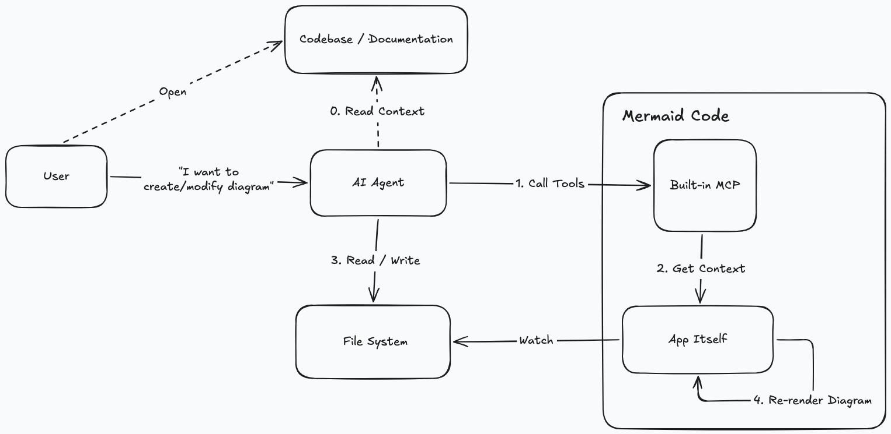

Plain diagram files.
Alive with your AI agent.
A desktop Mermaid editor for local .mmd files. Edit side-by-side with Claude Code or Codex, or let any MCP agent write and refresh them automatically.
01 / AI-First Workflow
Diagrams live as plain files on disk, so any coding agent can read your repo and edit them directly.
-
01
Open your project folder
Use the built-in Claude Code or Codex sidebar with per-folder session history, or connect any external MCP agent.
-
02
Ask your agent to draft or update
Generate architecture diagrams from real code, add error branches, or answer the agent's follow-up questions inline.
-
03
Preview refreshes automatically
The file watcher detects disk edits instantly and re-renders the SVG preview without losing your zoom position.
$ claude "Generate an architecture diagram for
this module and save it to docs/architecture.mmd"

Smart Editor
Syntax highlighting, keyword autocomplete, click-to-edit color swatches, and Vim mode.
File Manager
Folder tree or live thumbnail grid with subfolder filter, drag & drop, and per-folder tab restore.
Offline Icons
Built-in brand logos and Font Awesome icons that render completely offline — searchable by agents.
Visual Config
Adjust theme, look, layout, and font visually, then click Pin to code to save styles into the file.
02 / Built-in MCP Server
Connect external AI coding agents directly to your open Mermaid Code window.
Lets your agent see the opened folder, all .mmd files, and the currently active tab.
Previews generated Mermaid code straight in the Draft tab without writing to disk.
Finds exact built-in icon names for concepts like "postgres" or "kubernetes".
# Add via Claude Code CLI (~/.claude.json)
$ claude mcp add --transport http --scope user \
mermaid-code-mcp \
http://localhost:37079/mcp
# Add via Codex CLI (~/.codex/config.toml)
$ codex mcp add mermaid-code-mcp \
--url http://localhost:37079/mcp
# Add via OpenCode CLI (~/.config/opencode/opencode.json)
$ opencode mcp add mermaid-code-mcp \
--url http://localhost:37079/mcp --global
# Add to ~/.hermes/config.yaml mcp_servers: mermaid-code-mcp: url: "http://localhost:37079/mcp"
{
"mcpServers": {
"mermaid-code-mcp": {
"url": "http://localhost:37079/mcp"
}
}
}
03 / Install & Highlights
Free, open-source, auto-updating desktop app for macOS and Windows.
.mmd & .mermaid — Git-friendly text with Finder / Explorer "Open with"
$ brew tap m8524769/tap $ brew install --cask mermaid-code
xattr -dr com.apple.quarantine "/Applications/Mermaid Code.app"